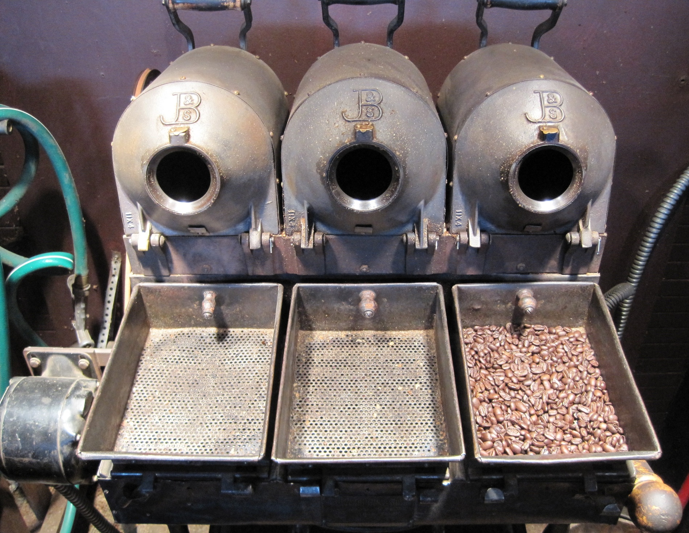

While Terroir tends toward pretty low body (particularly at its age when we pulled it), the crema's so thin on this shot due to it having been sipped from already!
In CoffeeScript, functions are values, but they are also much more than simple numbers, strings, or even complex data structures like trees or maps. Functions represent computations to be performed. Like numbers, strings, and arrays, they have a representation in CoffeeScript. Let’s start with the very simplest possible function. In CoffeeScript, it looks like this:3
() ->
This is a function that is applied to no values and produces no value. Hah! There’s the third thing. How do we represent “no value” in CoffeeScript? We’ll find out in a minute. First, let’s verify that our function is a value:
() ->
#=> [Function]
What!? Why didn’t it type back () -> for us? This seems to break our rule that if an expression is also a value, CoffeeScript will give the same value back to us. What’s going on? The simplest and easiest answer is that although the CoffeeScript interpreter does indeed return that value, displaying it on the screen is a slightly different matter. [Function] is a choice made by the people who wrote Node.js, the JavaScript environment that hosts the CoffeeScript REPL. If you try the same thing in a browser (using “Try CoffeeScript” at coffeescript.org for example), you’ll get something else entirely that isn’t CoffeeScript at all, it’s JavaScript.
You recall that we have two types of values with respect to identity: Value types and reference types. Value types share the same identity if they have the same contents.Reference types do not.
Which kind are functions? Let’s try it. For reasons of appeasing the CoffeeScript parser, we’ll enclose our functions in parentheses:
(() ->) is (() ->)
#=> false
Like arrays, every time you evaluate an expression to produce a function, you get a new function that is not identical to any other function, even if you use the same expression to generate it. “Function” is a reference type.
Let’s put functions to work. The way we use functions is to apply them to zero or more values called arguments. Just as 2 + 2 produces a value (in this case 4), applying a function to zero or more arguments produces a value as well.
Here’s how we apply a function to some values in CoffeeScript: Let’s say that fn_expr is an expression that when evaluated, produces a function. Let’s call the arguments args. Here’s how to apply a function to some arguments:
fn_expr
(
args
)
Right now, we only know about one such expression: () ->, so let’s use it. We’ll put it in parentheses5 to keep the parser happy, like we did above: (() ->). Since we aren’t giving it any arguments, we’ll simply write () after the expression. So we write:
(() ->)()
#=> undefined
What is this undefined?
undefined
In CoffeeScript, the absence of a value is written undefined, and it means there is no value. It will crop up again. undefined is its own type of value, and it acts like a value type:
undefined
#=> undefined
Like numbers, booleans and strings, CoffeeScript can print out the value undefined.
undefined is undefined
# => true
(() ->)() is (() ->)()
# => true
(() ->)() is undefined
# => true
No matter how you evaluate undefined, you get an identical value back. undefined is a value that means “I don’t have a value.” But it’s still a value :-)
Speaking of is undefined, a common pattern in CoffeeScript programming is to test wither something isnt undefined:
undefined isnt undefined
#=> false
'undefined' isnt undefined
#=> true
false isnt undefined
#=> true
This is so common that a shortcut is provided, the suffix operator ?:
undefined?
#=> false
'undefined'?
#=> true
false?
#=> true
Back to our function. We evaluated this:
(() ->)()
#=> undefined
Let’s recall that we were applying the function () -> to no arguments (because there was nothing inside of ()). So how do we know to expect undefined? That’s easy. When we define a function, we write the arguments it expects to the left of the () -> and an optional expression to the right. This expression is called the function’s body. Like this:
(
args
) ->
body
There is a funny rule: You can omit the body, and if you do, applying the function always evaluates to undefined.[^omit]
[^omit] Elsewhere, we’ve pledged to avoid optional bits that don’t add a lot to our understanding. This optional bit gives us an excuse to learn about undefined, so that’s why it’s in. Now that we know this, we see that our expression () -> evaluates to a function taking no arguments and having no expression, therefore when you apply it to no arguments with (() ->)(), you get undefined.
What about functions that have a body? Let’s write a few. Here’s the rule: We can use anything we’ve already learned how to use as an expression. Cutting and pasting, that means that the following are all expressions that evaluate to functions:
() -> 2
() -> 2 + 2
() -> "Hello" + " " + "CoffeeScript"
() -> true is not false
() -> false isnt true
And you can evaluate them by typing any of these into CoffeeScript:
(() -> 2)()
#=> 2
(() -> 2 + 2)()
#=> 4
(() -> "Hello" + " " + "CoffeeScript")()
#=> "Hello CoffeeScript"
(() -> true is not false)()
#=> true
(() -> false isnt true)()
#=> true
We haven’t discussed arguments yet, but let’s get clever with what we already have.
If an expression that evaluates to a function is, well, an expression, and if a function expression can have any expression on its right side… Can we put an expression that evaluates to a function on the right side of a function expression?
Yes:
() -> () ->
That’s a function! It’s a function that when applied that evaluates to a function that when applied evaluates to undefined. Watch and see:
() -> () ->
#=> [Function]
It evaluates to a function…
(() -> () ->)()
#=> [Function]
That when applied, evaluates to a function…
(() -> () ->)()()
#=> undefined
That when applied, evaluates to undefined. Likewise:
() -> () -> true
That’s a function! It’s a function that when applied that evaluates to a function that when applied evaluates to true:
(() -> () -> true)()()
#=> true
Well. We’ve been very clever, but so far this all seems very abstract and computer science-y. Diffraction of a crystal is beautiful and interesting in its own right, but you can’t blame us for wanting to be shown a practical use for it, like being able to determine the composition of a star millions of light years away. So… In the next chapter, “I’d Like to Have an Argument, Please,” we’ll see how to make functions practical.
Up to now, we’ve looked at functions without arguments. We haven’t even said what an argument is, only that our functions don’t have any.
Let’s make a function with an argument:
(room) ->
This function has one argument, room, and no body. Here’s a function with two arguments and no body:
(room, board) ->
I’m sure you are perfectly comfortable with the idea that this function has two arguments, room, and board. What does one do with the arguments? Use them in the body, of course. What do you think this is?
(diameter) -> diameter * 3.14159265
It’s a function for calculating the circumference of a circle given the radius. I read that aloud as “When applied to a value representing the diameter, this function gives (that’s my word for the arrow) the diameter times 3.14159265.”
Remember that to apply a function with no arguments, we wrote (() ->)(). To apply a function with an argument (or arguments), we put the argument (or arguments) within the parentheses, like this:
((diameter) -> diameter * 3.14159265)(2)
#=> 6.2831853
You won’t be surprised to see how to write and apply a function to two arguments:
((room, board) -> room + board)(800, 150)
#=> 950
Like most contemporary programming languages, CoffeeScript uses the “call by value” evaluation strategy. That’s a $2.75 way of saying that when you write some code that appears to apply a function to an expression or expressions, CoffeeScript evaluates all of those expressions and applies the functions to the resulting value(s).[^other-calls]
So when you write:
((diameter) -> diameter * 3.14159265)(1 + 1)
#=> 6.2831853
What happened internally is that the expression 1 + 1 was evaluated first, resulting in 2. Then our circumference function was applied to 2.7
Right now everything looks simple and straightforward, and we can move on to talk about arguments in more detail. And we’re going to work our way up from (diameter) -> diameter * 3.14159265 to functions like:
(x) -> (y) -> x
In order to talk about how this works, we should agree on a few terms (you may already know them, but let’s check-in together and “synchronize our dictionaries”). The first x, the one in (x) ->, is an argument. The y in (y) -> is another argument. The second x, the one in -> x, is not an argument, it’s an expression referring to a variable. Arguments and variables work the same way whether we’re talking about (x) -> (y) -> x or just plain (x) -> x.
Every time a function is invoked (“invoked” is a synonym for “applied to zero or more arguments”), a new environment is created. An environment is a (possibly empty) dictionary that maps variables to values by name. The x in the expression that we call a “variable” is itself an expression that is evaluated by looking up the value in the environment.
How does the value get put in the environment? Well for arguments, that is very simple. When you apply the function to the arguments, an entry is placed in the dictionary for each argument. So when we write:
((x) -> x)(2)
#=> 2
What happens is this:
(x) -> x evaluates to a function.2, evaluates to the number 2.2. Here’s where it gets interesting…When we talk about environments, we’ll use an unsurprising syntax for showing their bindings: {x: 2, ...}. meaning, that the environment is a dictionary, and that the value 2 is bound to the name x, and that there might be other stuff in that dictionary we aren’t discussing right now.
Earlier, we distinguished CoffeeScript’s value types from its reference types. At that time, we looked at how CoffeeScript distinguishes objects that are identical from objects that are not. Now it is time to take another look at the distinction between value and reference types.
There is a property that CoffeeScript strictly maintains: When a value–any value–is passed as an argument to a function, the value bound in the function’s environment must be identical to the original.
We said that CoffeeScript binds names to values, but we didn’t say what it means to bind a name to a value. Now we can elaborate: When CoffeeScript binds a name to a value type value, it makes a copy of the value and places the copy in the environment. As you recall, value types like strings and numbers are identical to each other if they have the same content. So CoffeeScript can make as many copies of strings, numbers, or booleans as it wishes.
What about reference types? CoffeeScript cannot place a copy of an array or object in an environment, because the copy would not be identical to the original. So instead, CoffeeScript does not place reference values in any environment. CoffeeScript places references to reference types in environments, and when the value needs to be used, CoffeeScript uses the reference to obtain the original.
Because many references can share the same value, and because CoffeeScript passes references as arguments, CoffeeScript can be said to implement “call by sharing” semantics. Call by sharing is generally understood to be a specialization of call by value, and it explains why some values are known as value types and other values are known as reference types.
And with that, we’re ready to look at closures. When we combine our knowledge of value types, reference types, arguments, and closures, we’ll understand why this function always evaluates to true no matter what argument you apply it to:
(value) ->
((copy) ->
copy is value
)(value)
Before we explain (x) -> (y) -> x, we’re going to toss in something that doesn’t directly affect our explanation, but makes things easier to see visually. Up to now, every function has looked like this: (arguments) -> body. There’s another way to write functions. For example here’s the other way to write (x) -> x:
(x) ->
x
You get the idea: You can indent the body instead of putting it on the same line. Let’s introduce a new term: (x) -> is the function’s signature, and x is its body, just as we’ve mentioned before.
That means inductively we can also write (x) -> (y) -> x in two other ways:
(x) ->
(y) -> x
Or:
(x) ->
(y) ->
x
The indents help us see that the x is the body “belonging to” a function with signature (y) ->, and that it belongs to a function with signature (x) ->.
Time to see how a function within a function works:
((x) ->
(y) ->
x
)(1)(2)
#=> 1
First off, let’s use what we learned above. Given (some function)(some argument), we know that we apply the function to the argument, create an environment, bind the value of the argument to the name, and evaluate the function’s expression. So we do that first with this code:
((x) ->
(y) ->
x
)(1)
#=> [Function]
The environment belonging to the function with signature (x) -> becomes {x: 1, ...}, and the result of applying the function is another function value. It makes sense that the result value is a function, because the expression for (x) ->’s body is:
(y) ->
x
So now we have a value representing that function. Then we’re going to take the value of that function and apply it to the argument 2, something like this:
((y) ->
x)(2)
So we seem to get a new environment {y: 2, ...}. How is the expression x going to be evaluated in that function’s environment? There is no x!
The function (y) -> x is interesting. It contains a free variable, x.8 A free variable is one that is not bound within the function. Up to now, we’ve only seen one way to “bind” a variable, namely by passing in an argument with the same name. Since the function (y) -> x doesn’t have an argument named x, the variable x isn’t bound in this function, which makes it “free.”
Now that we know that variables used in a function are either bound or free, we can bifurcate functions into those with free variables and those without:
Pure functions are easiest to understand. They always mean the same thing wherever you use them. Here are some pure functions we’ve already seen:
() ->
(x) ->
x
(x) ->
(y) ->
x
The first function doesn’t have any variables, therefore doesn’t have any free variables. The second doesn’t have any free variables, because its only variable is bound. The third one is actually two functions, one in side the other. (y) -> has a free variable, but the entire expression refers to (x) ->, and it doesn’t have a free variable: The only variable anywhere in its body is x, which is certainly bound within (x) ->.
From this, we learn something: A pure function can contain a closure.
Pure functions always mean the same thing because all of their “inputs” are fully defined by their arguments. Not so with a closure. If I present to you this free function (x, y) -> x + y, we know exactly what it does with (2, 2). But what about this closure: (y) -> x + y? We can’t say what it will do with argument (2) without understanding the magic for evaluating the free variable x.
To understand how closures are evaluated, we need to revisit environments. As we’ve said before, all functions are associated with an environment. We also hand-waved something when describing our environment. Remember that we said the environment for ((x) -> (y) -> x)(1) is {x: 1, ...} and that the environment for ((y) -> x)(2) is {y: 2, ...}? Let’s fill in the blanks!
The environment for ((y) -> x)(2) is actually {y: 2, '..': {x: 1, ...}}. '..' means something like “parent” or “enclosure” or “super-environment.” It’s (x) ->’s environment, because the function (y) -> x is within (x) ->’s body. So whenever a function is applied to arguments, its environment always has a reference to its parent environment.
And now you can guess how we evaluate ((y) -> x)(2) in the environment {y: 2, '..': {x: 1, ...}}. The variable x isn’t in (y) ->’s immediate environment, but it is in its parent’s environment, so it evaluates to 1 and that’s what ((y) -> x)(2) returns even though it ended up ignoring its own argument.
Functions can have grandparents too:
(x) ->
(y) ->
(z) ->
x + y + z
This function does much the same thing as:
(x, y, z) ->
x + y + z
Only you call it with (1)(2)(3) instead of (1, 2, 3). The other big difference is that you can call it with (1) and get a function back that you can later call with (2)(3).
An interesting thing happens when a variable has the same name as an ancestor environment’s variable. Consider:
(x) ->
(x, y) ->
x + y
The function (x, y) -> x + y is a pure function, because its x is defined within its own environment. Although its parent also defines an x, it is ignored when evaluating x + y. CoffeeScript always searches for a binding starting with the functions own environment and then each parent in turn until it finds one. The same is true of:
(x) ->
(x, y) ->
(w, z) ->
(w) ->
x + y + z
When evaluating x + y + z, CoffeeScript will find x and y in the great-grandparent scope and z in the parent scope. The x in the great-great-grandparent scope is ignored, as are both ws. When a variable has the same name as an ancestor environment’s binding, it is said to shadow the ancestor.
This is often a good thing.
This behaviour of pure functions and closures has many, many consequences that can be exploited to write software. We are going to explore them in some detail as well as look at some of the other mechanisms CoffeeScript provides for working with variables and mutable state.
But before we do so, there’s one final question: Where does the ancestry start? If there’s no other code in a file, what is (x) -> x’s parent environment?
CoffeeScript always has the notion of at least one environment we do not control: A global environment in which many useful things are bound such as libraries full of standard functions. So when you invoke ((x) -> x)(1) in the REPL, its full environment is going to look like this: {x: 1, '..': global environment}. When you use CoffeeScript to compile physical files for use in node or web applications, CoffeeScript does something interesting: It wraps your code in an invisible function, like this:
(() ->
((x) -> x)(1)
)()
The effect of this is to insert a new, empty environment in between the global environment and your own functions: {x: 1, '..': {'..': global environment}}. As we’ll see when we discuss mutable state, this helps to prevent programmers from accidentally changing the global state that is shared by code in every file.
Both of the following produce the exact same result:
do (Pi = 3.14159265) ->
(diameter) ->
diameter * Pi
And:
(diameter) ->
do (Pi = 3.14159265) ->
diameter * Pi
Why do we habitually prefer the former?
To understand this, we’re going to take a simple step towards more complex, state-full programs by introducing sequences of expressions. If we had no other tools, we could evaluate a series of expressions with some legerdemain like this:
do (ignore1 = foo(),
ignore2 = bar(),
ignore3 = blitz(),
value = bash()) ->
bash
Or perhaps like this:
do (ignore = [foo(), bar(), blitz()], value = bash()) ->
bash
Or even this:
[
foo()
bar()
blitz() ] and bash()
Any of these would evaluate foo(), bar(), blitz(), and then return the value of bash() (whatever they might be).
But let’s learn another handy CoffeeScript feature, again because it helps us focus on what is actually going on. Whenever you want to work with the body of a function, you can always have it evaluate a simple sequence of one or more expressions by indenting them. The value of the body is the value of the final expression.
So in that case, we can write something like:
do () ->
foo()
bar()
blitz()
bash()
Anywhere a simple expression is allowed, you could use a do with a sequence. This doesn’t come up as much as you might think, because many of the places you want to do this, CoffeeScript already lets you indent and include more than one expression. For example, in a function body:
(foo) ->
bar(foo)
bash(foo)
foo('blitz')
So back to our question. Here’s a test framework:
do (circumference = do (Pi = 3.14159265) ->
(diameter) ->
diameter * Pi) ->
circumference(1)
circumference(2)
circumference(3)
circumference(4)
circumference(5)
circumference(6)
circumference(7)
circumference(8)
circumference(9)
circumference(10)
#=> 31.4159265
Let’s think about how many functions we are invoking. When this is first invoked, We invoke the outer do (circumference = (...) ->. As part of doing that, we invoke do (Pi = 3.14159265) -> and bind the result to circumference. Then every time we invoke circumference, we invoke (diameter) ->. All together, twelve.
But with:
do (circumference = (diameter) ->
do (Pi = 3.14159265) ->
diameter * Pi) ->
circumference(1)
circumference(2)
circumference(3)
circumference(4)
circumference(5)
circumference(6)
circumference(7)
circumference(8)
circumference(9)
circumference(10)
#=> 31.4159265
What happens? There’s one outer do (circumference = (...) ->, same as before. And then every time we invoke circumference, we also invoke do (Pi = 3.14159265) ->, so we have a total of twenty-one function invocations. This is nearly twice as expensive.

This summary is still being roasted to perfection. Thanks for your patience!